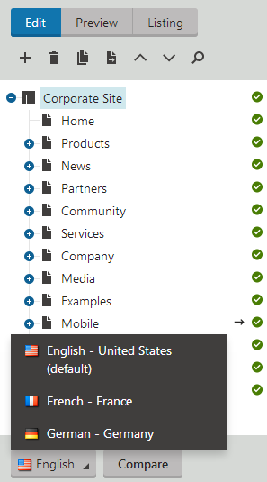
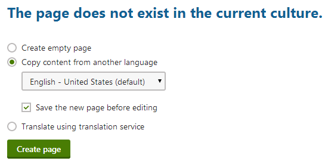
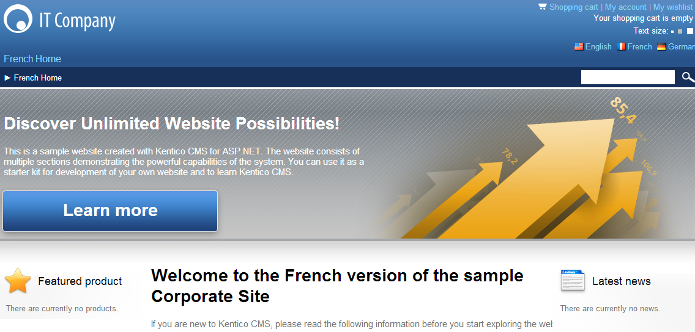

Editing the content of multilingual websites
After the site administrator has specified cultures for a website, the content editors can begin to translate the content (web pages) or assign the translation to translation services.
When you open the Pages application on a multilingual website, you can see the language selector below the content tree. Use the selector to switch between language versions of the currently selected page.

You can also click Compare to edit language versions side-by-side.
Creating multiple language versions of pages
The following example shows how to manually translate a page into the French language:
Open the Pages application.
Select the root page in the content tree and switch to the French culture. Since the French version of the page does not exist yet, you can create it through one of the following ways:
Create empty page - creates a new page of the same type, but without any content.
Copy content from another language - creates a copy of the page with content loaded from the selected language version. If Save the new page before editing is checked, the system adds the new page version and immediately saves the copied content.
Translate using translation service - with this option, the content of the page's new language version will be provided by an external translation service. See the Configuring translation services chapter to learn more.
Choose to Copy content from another language.
Select English - United States.

Creating a new language version of a pageClick Create page.
The French version of the root page has now been created. You can now translate other pages on the website:
Choose the Home page in the content tree.
Select Copy content from another language, but this time disable the Save the new page before editing option.
Click Create page.
The editing form of the new page version opens. Change the Page name to French Home.
Click Save.
On the Page tab, change the text of the heading in the second editable region to: Welcome to the French version of the sample Corporate Site
Click Save.
You can modify the content of a page's editable regions to be different for each specific language version. It is also possible to translate the content entered on a page's Form tab, and even assign culture specific values for many of the page's Properties.
If you view the page on the live site, you can see the French version.

Viewing the French home page on the live site
You can switch between languages using the language selection links at the top right of the website header.
Creating content for another language
When adding a new language to the website, please be sure to always create a language version for at least the root page and the default home page. Otherwise, the system cannot display the site correctly.
In the Pages application, the content tree displays the Not translated page ( ) status icon next to pages that do not exist in the selected culture.
) status icon next to pages that do not exist in the selected culture.
Using the default language version for untranslated pages
You can configure websites to display content from the default language for pages that are not available in the selected language.
In the Kentico administration interface, open the Settings application.
Select the Content category.
Choose your Site from the drop-down list and enable the Combine with default culture setting.
Click Save.
Now you can sign out and view the French version of the live website again. Pages that are not available in French are displayed in the default culture (English).